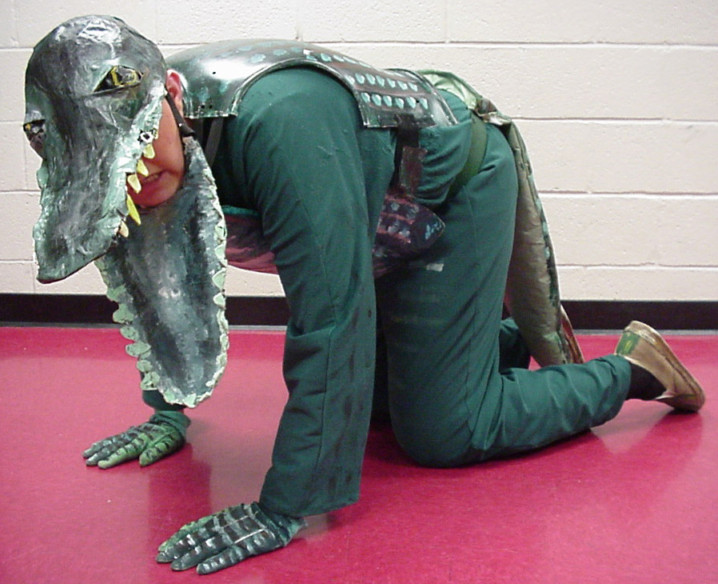
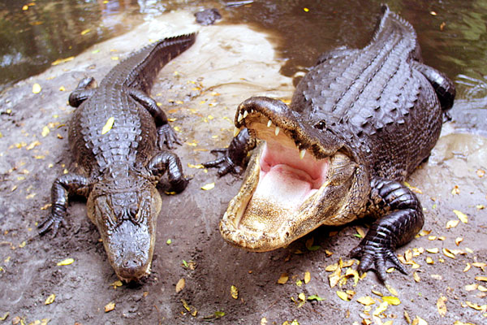
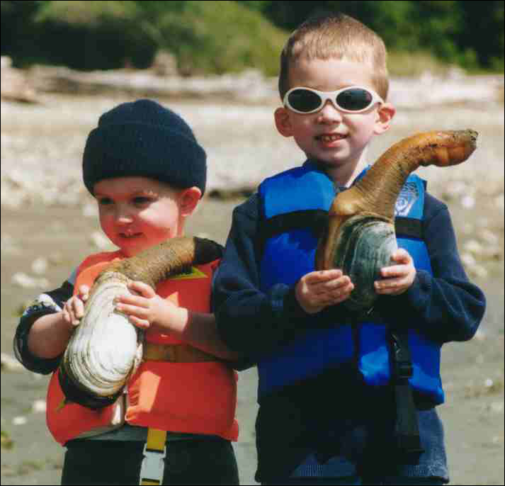
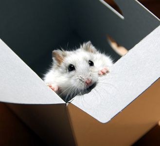

You're chicken only poll makes me cringe. *Removes poll*
My favorite animal? Why, it's the flying squirrel! Oh, look out; here it comes, straight at your face.

My favorite animal? Why, it's the flying squirrel! Oh, look out; here it comes, straight at your face.
Browny-Green tortoises.
I have not one, but about 3.
Cat.

Siberian Husky.

Finally.
Wolf.

Cat.
Siberian Husky.
Finally.
Wolf.
 Ligers are FREAKIN' AWESOME! Wow!
Ligers are FREAKIN' AWESOME! Wow!And that wolf is beautiful.
but seriously...
my favorite animal is an ALLIGATOR:


My two cats top the list right now.

GEODUCKS! Yes, they may seem odd, and even slightly Phallic, but still, you cant go wrong with a name like that.
Ya also can't go wrong with the standard goldfish.


Awwww.... I love hammysters.